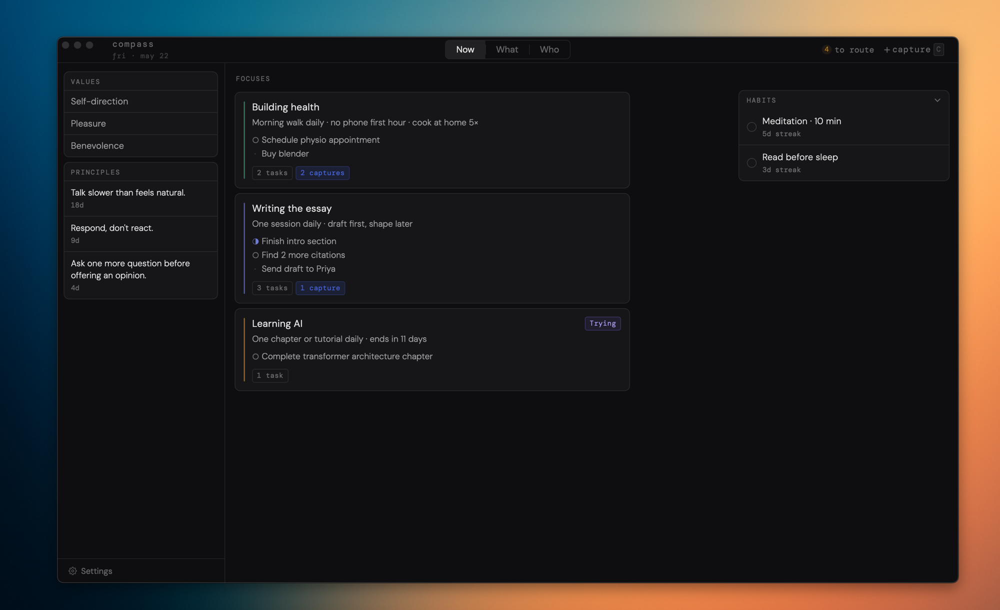

Compass keeps your values, focuses, and daily habits in one calm space — no project management overhead.
Start here →
Three views
Now
Active focuses with their top tasks. Habits to check off. Quick capture so nothing slips while you're in motion.
What
Everything you're working on — active, parked, or in queue. Track streaks, tags, and ideas routed from the inbox.
Who
The values you hold and the behavioral principles you're actively practicing. The foundation everything else is built on.
How it works
01
Press C anywhere to jot a thought — task, idea, or impulse — without losing context.
02
Triage your inbox: send each capture to a focus, or dismiss it. Keeps the signal clean.
03
Open Now and see exactly what deserves your attention today — nothing more.
Download
macOS (Apple Silicon · Intel) · Windows (x64)
Compass is free and open-source. Apple requires a $99/yr developer certificate to silently trust apps — we skip that so the app stays free. macOS will block the first launch with a "cannot be opened" warning. Here's how to get past it in seconds: